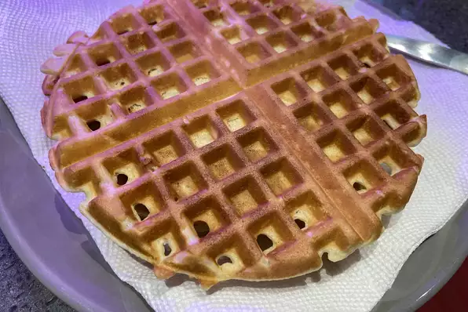

Classic Waffles

Nutrition Facts
Per Serving: 379 calories; protein 10.2g; carbohydrates 47.6g;
fat 16.2g; cholesterol 112.8mg; sodium 899.1mg.
Ingredients (5 servings)
- 2 cups all-purpose flour
- 1 teaspoons salt
- 1 tablespoon and 1 teaspoons baking powder
- 2 tablespoons white sugar
- 2 eggs
- 1 1/2 cups warm milk
- 1/4 cup and 1 tablespoon and 1 teaspoons butter, melted
- 1 teaspoons vanilla extract
Steps
-
In a large bowl, mix together flour, salt, baking powder and sugar; set aside.
Preheat waffle iron to desired temperature.
-
In a separate bowl, beat the eggs. Stir in the milk, butter and vanilla.
Pour the milk mixture into the flour mixture; beat until blended.
-
Ladle the batter into a preheated waffle iron. Cook the waffles until golden and crisp.
Serve immediately.